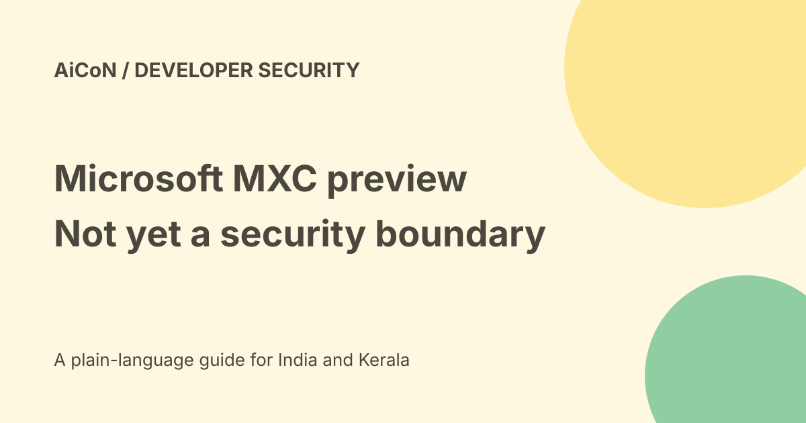

Microsoft MXC: preview sandboxing with a security warning
Microsoft Execution Containers, or MXC, is open-source code for running untrusted workloads through containment backends. Its repository explicitly warns that no MXC profiles should currently be treated as security boundaries. That warning is more important than the word sandbox in the headline.

What does MXC do?
MXC presents execution settings through a JSON configuration schema and a TypeScript SDK. It is intended for workloads such as model output, plugins and tools.
A sandbox tries to limit what a process can reach. A configuration file describes those limits; it does not prove that every backend enforces every field. The project is an early preview under ongoing development.
Backends are different
The repository lists Windows, Linux and macOS routes, including process containment, Bubblewrap, LXC, Seatbelt and several experimental options such as microVM and Windows Sandbox backends.
The supported-OS table gives different version, architecture and runtime requirements. Linux needs the matching backend runtime. Experimental backends need explicit experimental mode. Do not read cross-platform as identical enforcement on every computer.
Filesystem, network and UI policies
The README describes policies for file access, network access and UI restrictions. It also notes backend-dependent host filtering and cooperative proxy support on Linux and macOS.
Before testing, read the backend's support table and the current policy specification. A flag that is accepted in a schema may not carry the same isolation guarantee everywhere.
The audit-mode trap
The documentation says audit runs a policy in permissive mode: denied operations are logged but allowed to continue. It warns that release-build audit mode does not enforce AppContainer restrictions for the duration of the run.
That is a policy-authoring feature, not a safe mode for hostile execution. A log saying an operation would be denied is different from actually blocking it.
Understand a session lifecycle
The SDK describes provision, start, execute, stop and deprovision operations for session sandboxes. Those names describe setup and cleanup, not proof that cleanup will happen after every failure.
For a test harness, plan timeouts, resource limits, process shutdown and disposal separately. Keep secrets, valuable files and privileged credentials outside the test environment.
A cautious developer evaluation
- Read the current README warning, licence and policy documentation.
- Choose a disposable environment with no sensitive files or active credentials.
- Check the exact OS version, architecture and backend runtime.
- Use harmless test code to understand the behaviour first.
- Define minimal filesystem and network permissions.
- Test allowed and denied actions independently of the schema.
- Do not enable permissive audit mode while expecting enforcement.
- Inspect logs and verify that child processes and session resources stop.
- Do not move to hostile or production workloads until the documented security position and your own tests justify it.
This guide did not compile MXC, run code, test an escape or verify backend isolation. It is a reading-based preview review.
Free, paid and India verdict
The repository declares MIT licensing. That allows use under the licence terms, but does not pay for your machine, operating system, VM resources or hosted execution.
We did not test installation on an Indian device, organisational approval or a managed cloud environment. This is developer infrastructure, not a ready-made consumer antivirus or a guarantee that an AI agent cannot damage files.
What changed since the original post?
The original preview warning remains central. We add backend and runtime differences, the permissive audit-mode warning and a clearer separation between policy intent and verified enforcement.
Frequently asked questions
Is it safe because Microsoft publishes it?
The publisher explicitly says not to treat current profiles as security boundaries.
Does audit mode block denied actions?
The documented permissive mode logs them but allows them to proceed.
Are all backends equivalent?
No. Read the backend-specific support and requirements.
Was an escape test performed?
No. No code was run for this guide.
Sources: Official MXC repository and preview warning · Official policy specification. Checked 7 October 2026.